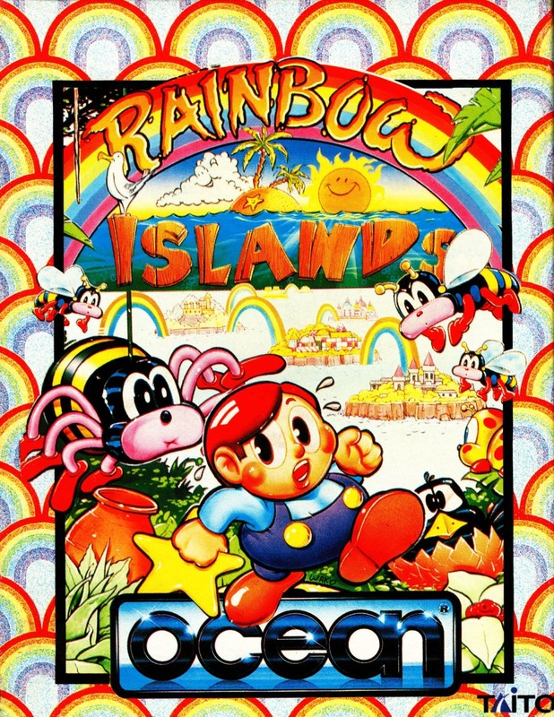
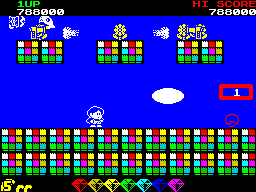

Rainbow Islands


{kind=link}

| Publisher: | Ocean |
| Price: | £9.99 Cass, £14.99 Disk |
| Year: | 1990 |
| Source: | CRASH, Issue 75 |

The prequel to Rainbow Islands is an all time favourite: Bubble Bobble. Now, after a loooong wait, the sequel is here. After defeating the despicable Baron Von Blubba and returning themselves to human form, dynamic Bub and Bob decided to get away from the hustle and bustle of everyday life and go to the Rainbow Islands. But life is not happy and carefree (is it ever), because he’s back (cue spooky organ music!) Baron von Blubba is out for revenge.

He starts by kidnapping the inhabitants of the islands. Of course Bub and Bob aren’t going to stand for hat: they once again go to war with the fat, slimy one. In Bubble Bobble you used bubbles to knock the baddies for six, now you travel across the seven islands spitting rainbows at attackers. You start on Insect Island and your task is simple, travel from the bottom of the screen to the top. But on the way up you’re attacked by all manner of Bubba’s minions, flies, ladybirds, crows and beetles. Apart from knocking them out with your rainbows, bonus points can be yours for picking up the variety of fruit, flowers, gems etc. along the way. Extra goodies such as double and triple rainbows, extra lives and extra speed can also be found, but ours is not to tell you how. And a word of warning, take too long in climbing from A to B, and a little incentive will be added to hurry you along. After four levels you face the island fattie: vanquish him and move on to the next island to carry on the good work.
Aaagh, I really can’t drag myself away from the game to write the review: Rainbow Islands is one of (if not the most) playable platform games I’ve played recently, all credit to Graftgold. OK, the character sprite is monochromatic, but he doesn’t half shift. The backgrounds are the best part of the game though: nicely detailed coloured backdrops abound (with surprisingly little colour clash). Sound is also very, very impressive with a bouncy tune playing throughout. A brilliant sequel to a classic game.
MARK — 95%
All fans of cute little characters, colourful (well almost) rainbows and catchy ditties sit up and pay attention because your ultimate game has arrived. Rainbow Islands is out of this world. Every single sprite in the game is excellently detailed, drawn in cartoon style, and still looks good when it’s put on the equally detailed backgrounds. Colour oozes out of every corner of the game, and you never notice any clash at all. Each island is made up of four levels, each one boasting its own challenges and enemies. Some of the later islands will blow your mind — you begin to wonder whether this is actually the Spectrum version! All this plus the adorable tune ‘Somewhere Over The Rainbow’ in the background makes the ultimate arcade conversion. There’s only one thing that lets it down a bit: the tune slows down when the screen fills up with nasties, but you have to expect that. Rainbow Islands is terrific, you just have to see this for yourself!
NICK — 93%
RATING
A classic game has inspired a rainbow-brilliant sequel to savour and thrill to!
| Presentation: | 89% |
| Graphics: | 90% |
| Sound: | 87% |
| Playability: | 92% |
| Addictivity: | 92% |
| Overall: | 94% |